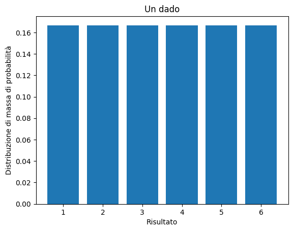
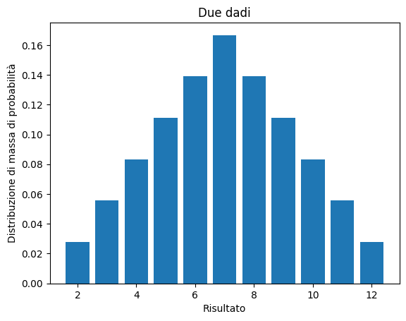

Introduzione al calcolo delle probabilità
Contents
15. Introduzione al calcolo delle probabilità#
In questa parte della dispensa verrà introdotta la teoria delle probabilità. Prima di entrare nei dettagli, cerchiamo di capire perché la probabilità sia così importante per la ricerca scientifica.
La teoria delle probabilità è cruciale per la scienza perché la ricerca procede mediante l’inferenza induttiva. Non siamo mai completamente sicuri della verità di una proposizione (ipotesi, teoria): al valore di verità di una proposizione possiamo solo assegnare un grado di certezza probabilistico. L’approccio bayesiano è una scuola di pensiero che usa la probabilità per quantificare il grado di fiducia che può essere attribuito ad una proposizione. L’inferenza statistica bayesiana è un tipo di inferenza induttiva che ha lo scopo di quantificare la fiducia che si ha nell’ipotesi \(H\) dopo avere osservato il dato di evidenza \(E\). Per quantificare un tale grado di fiducia l’inferenza statistica bayesiana utilizza, appunto, la teoria delle probabilità. Una comprensione dell’inferenza statistica bayesiana richiede dunque, preliminarmente, la conoscenza (di almeno gli elementi di base) della teoria delle probabilità.
15.1. Che cos’è la probabilità?#
La definizione della probabilità è un problema estremamente dibattuto ed aperto. Sono state fornite due possibili soluzioni al problema di definire il concetto di probabilità.
a. La natura della probabilità è “ontologica” (ovvero, basata sulla metafisica): la probabilità è una proprietà della della realtà, del mondo, di come sono le cose, indipendentemente dalla nostra esperienza. È una visione che qualcuno chiama “oggettiva”.
b. La natura della probabilità è “epistemica” (ovvero, basata sulla conoscenza): la probabilità si riferisce alla conoscenza che abbiamo del mondo, non al mondo in sé. Di conseguenza è detta, in contrapposizione alla precedente definizione, “soggettiva”.
In termini epistemici, la probabilità fornisce una misura della nostra incertezza sul verificarsi di un evento, alla luce delle informazioni disponibili. Potremmo dire che c’è una “scala” naturale che ha per estremi il vero (1: evento certo), da una parte, ed il falso (0: evento impossibile), dall’altra. La probabilità è la quantificazione di questa scala: descrive lo stato della nostra incertezza rispetto al contenuto di verità di una proposizione.
L’incertezza nelle nostre previsioni può sorgere per due ragioni fondamentalmente diverse. La prima è dovuta alla nostra ignoranza relativamente alle cause nascoste sottostanti o dei meccanismi che generano i dati. Questa è, appunto, un’incertezza epistemica. Il secondo tipo di incertezza deriva invece dalla variabilità intrinseca dei fenomeni, che non può essere ridotta anche se raccogliamo più dati. Questa seconda forma di incertezza è talvolta chiamata aleatoria. Come esempio concreto, consideriamo il lancio di una moneta equilibrata. Sappiamo con certezza che la probabilità di testa è \(P = 0.5\), quindi non c’è incertezza epistemica, ma non questo non è sufficiente per prevedere con certezza il risultato – in altre parole, l’incertezza aleatoria persiste anche in assenza di incertezza epistemica.
L’interpretazione bayesiana di probabilità si contrappone all’interpretazione frequentista. Nell’interpretazione frequentista, la probabilità \(P(E)\) rappresenta la frequenza relativa a lungo termine di un grande numero di ripetizioni di un esperimento casuale sotto le medesime condizioni. Viene stressata qui l’idea che ciò di cui parliamo è qualcosa che emerge nel momento in cui è possibile ripetere l’esperimento casuale tante volte sotto le medesime condizioni – sono invece esclusi gli eventi unici e irripetibili.
L’interpretazione bayesiana della probabilità fa invece ricorso ad una concezione più ampia, non legata al solo evento in sé, ma che include anche il soggetto assegnante la funzione di probabilità. In pratica l’assegnazione di probabilità bayesiana viene effettuata dal decisore, in base alle proprie conoscenze a priori integrate con tutto il generico bagaglio culturale personale. In questo modo, la probabilità non sarà obbligatoriamente la stessa per tutti i soggetti, ma variarierà a seconda delle informazioni a disposizione, dell’esperienza personale e soprattutto del punto di vista proprio di ogni decisore ed è dunque assimilabile al “grado di fiducia” – in inglese degree of belief – di un dato soggetto, in un dato istante e con un dato insieme d’informazioni, circa l’accadere dell’evento \(E\).
[N]essuna scienza ci permetterà di dire: il tale fatto accadrà, andrà così e così, perché ciò è conseguenza di tale legge, e tale legge è una verità assoluta, ma tanto meno ci condurrà a concludere scetticamente: la verità assoluta non esiste, e quindi tale fatto può accadere e può non accadere, può andare così e può andare in tutt’altro modo, nulla io ne so. Quel che si potrà dire è questo: io prevedo che il tale fatto avverrà, e avverrà nel tal modo, perché l’esperienza del passato e l’elaborazione scientifica cui il pensiero dell’uomo l’ha sottoposta mi fanno sembrare ragionevole questa previsione” (De Finetti, 1931).
Nota
La caratterizzazione ‘epistemica’ della nozione di probabilità può essere chiarita facendo riferimento all’esempio prototipico con il quale la probabilità viene solitamente descritta, ovvero come una frequenza relativa. A questo proposito, McElreath ci chiede di riflettere con maggiore attenzione sul fenomeno costituito da una sequenza di lanci di una moneta, ovvero l’esempio tradizionale con il quale si descrive un evento “aleatorio”. Ingenuamente potremmo pensare che un tale fenomeno sia “casuale”, nel senso che, all’interno della sequenza, non vi è alcuna informazione negli eventi (lanci) passati che sia utile per prevedere gli eventi futuri. Ma non è così. Il lancio di una moneta è un fenomeno deterministico, regolato dalle leggi fisiche. Infatti, sono state create delle macchine che, applicando la stessa forza ogni volta, sono in grado di ripetere lo stesso esito (testa o croce) in ogni prova. Questo significa che la “casualità” della sequenza di lanci non è una proprietà del fenomeno fisico che vorremmo descrivere (i fenomeni fisici sono sempre deterministici in quanto sono regolati dalle leggi della fisica) ma bensì è epistemica, ovvero riguarda lo stato dell’informazione disponibile all’osservatore.
15.1.1. Formalizzazione dell’incertezza#
La caratterizzazione della probabilità quale rappresentazione dell’incertezza epistemica è stata formalizzata in ambito bayesiano da Ramsey e de Finetti. De Finetti riconduce l’assegnazione di probabilità allo scommettere sul verificarsi di un evento: la probabilità di un evento \(E\) è la quota \(p(E)\) che un individuo reputa di dover pagare ad un banco per ricevere “1” ovvero “0” verificandosi o non verificandosi \(E\).
In termini formali, secondo De Finetti, le valutazioni di probabilità degli eventi devono rispondere ai principi di equità e coerenza.
Una scommessa risponde al principio di equità se il ruolo di banco e giocatore sono scambiabili in ogni momento del gioco e sempre alle stesse condizioni.
Una scommessa risponde al principio di coerenza se non vi sono combinazioni di scommesse che consentano (sia al banco che al giocatore) di realizzare perdite o vincite certe.
L’approccio definettiano dell’impostazione della scommessa si basa dunque sulle assunzioni di razionalità e coerenza del decisore, al quale è fatto esplicito divieto di effettuare scommesse a perdita o guadagno certo. Il decisore, proponendo la scommessa, deve essere disposto a scambiare il posto dello scommettitore con quello del banco.
Il metodo della scommessa, oltre che una definizione, fornisce un mezzo operativo di assegnazione della probabilità. Sulla base di questa definizione operativa, che si può ritenere ragionevolmente soddisfatta dal comportamento di un qualunque individuo che agisca in modo razionale in condizioni di incertezza, possono essere agevolmente dimostrate tutte le proprietà classiche della probabilità: essa non può assumere valori negativi, né può essere superiore all’unità; se \(E\) è un evento certo, la sua probabilità è 1; se invece \(E\) è un evento impossibile, la sua probabilità è 0.
I problemi posti dall’approccio definettiano riguardano l’arbitrarietà dell’assegnazione soggettività di probabilità la quale sembra negare la validità dell’intero costrutto teorico. In risposta a tale critica, i bayesiani sostengono che gli approcci oggettivisti alla probabilità nascondono scelte arbitrarie preliminari e sono basate su assunzioni implausibili. È molto più onesto esplicitare subito tutte le scelte arbitrarie effettuate nel corso dell’analisi in modo da controllarne coerenza e razionalità.
Nota
Per chi desidera approfondire, un’introduzione molto leggibile alle tematiche della definizione della probabilità nella storia della scienza è fornita nel primo capitolo del testo Bernoulli’s fallacy [Cla21].
15.2. Variabili casuali e probabilità di un evento#
Esaminiamo qui di seguito alcuni concetti di base della teoria delle probabilità, la quale può essere intesa come un’estensione della logica.
15.2.1. Eventi e probabilità#
Nella teoria delle probabilità il risultato “testa” nel lancio di una moneta è chiamato evento.[^015_prob_intro-1] Un evento, denotato da una variabile binaria, corrisponde ad uno stato del mondo che si verifica oppure no. Ad esempio, \(Y\) = 1 può denotare l’evento per cui il lancio di una moneta produce il risultato testa. Il funzionale \(P(Y)\) denota la probabilità con cui si ritiene che l’evento \(Y\) sia vero (o la proporzione di volte che si verifica tale evento osservando a lungo termine delle ripetizioni indipendenti di un esperimento casuale). Ad esempio, per il lancio di una moneta equilibrata, la probabilità dell’evento “il risultato del lancio della moneta è testa” è scritta come \(P(Y = 1) = 0.5.\)
Se la moneta è equilibrata dobbiamo anche avere \(P(Y = 0) = 0.5\). I due eventi \(Y\) = 1 e \(Y\) = 0 sono mutuamente esclusivi nel senso che non possono entrambi verificarsi contemporaneamente: \(P(Y = 1\; \land \; Y = 0) = 0.\) Gli eventi \(Y\) = 1 e \(Y\) = 0 di dicono esaustivi, nel senso che almeno uno di essi deve verificarsi e nessun altro tipo di evento è possibile. Nella notazione probabilistica, \(P(Y = 1\; \lor \; Y = 0) = 1.\) Il connettivo logico “o” (\(\lor\)) specifica eventi disgiunti, ovvero eventi che non possono verificarsi contemporaneamente (eventi incompatibili) e per i quali, perciò, la probabilità della loro congiunzione è \(P(A \; \land \; B) = 0\). Il connettivo logico “e” (\(\land\)), invece, specifica eventi congiunti, ovvero eventi che possono verificarsi contemporaneamente (eventi compatibili) e per i quali, perciò, la probabilità della loro congiunzione è \(P(A \; \land \; B) > 0\). La probabilità del verificarsi di due eventi congiunti \(A\) e \(B\) si può denotare, in maniera equivalente, con la notazione precedente, oppure con \(P(A \cap B)\), oppure con \(P(A, B)\).
Si richiede che \(0 \leq P(A) \leq 1\), dove \(P(A) = 0\) denota l’evento impossibile e \(P(A) = 1\) denota l’evento certo. Scriviamo \(P(\lnot A)\) o \(P(\bar{A})\) per denotare la probabilità che l’evento \(A\) non avvenga; questa probabilità è definita come \(P(\bar{A}) = 1 − P(A)\).
15.2.2. Spazio campione e risultati possibili#
Anche se il lancio di una moneta produce sempre uno specifico risultato nel mondo reale, possiamo anche immaginare i possibili risultati alternativi che si sarebbero potuti osservare. Quindi, anche se in uno specifico lancio la moneta dà testa (\(Y\) = 1), possiamo immaginare la possibilità che il lancio possa avere prodotto croce (\(Y\) = 0). Tale ragionamento controfattuale è la chiave per comprendere la teoria delle probabilità e l’inferenza statistica.
I risultati possibili che si possono osservare come conseguenza del lancio di una moneta determinano i valori possibili che la variabile casuale può assumere. L’insieme \(\Omega\) di tutti i risultati possibili è chiamato spazio campione (sample space). Lo spazio campione può essere concettualizzato come un’urna contenente una pallina per ogni possibile risultato del lancio della moneta. Su ogni pallina è scritto il valore della variabile casuale. Uno specifico lancio di una moneta – ovvero, l’osservazione di uno specifico valore di una variabile casuale – è chiamato esperimento casuale.
Il lancio di un dado ci fornisce l’esempio di un altro esperimento casuale. Supponiamo di essere interessati all’evento “il lancio del dado produce un numero dispari”. Un evento seleziona un sottoinsieme dello spazio campione: in questo caso, l’insieme dei risultati \(\{1, 3, 5\}\). Se esce 3, per esempio, diciamo che si è verificato l’evento “dispari” (ma l’evento “dispari” si sarebbe anche verificato anche se fosse uscito 1 o 5).
15.3. Distribuzione di probabilità#
Sia \(Y\) il risultato del lancio di moneta equilibrata; non di un generico lancio di una moneta, ma un’istanza specifica del lancio di una specifica moneta in un dato momento. Definita in questo modo, \(Y\) è una variabile casuale, ovvero una variabile i cui valori non possono essere previsti con esattezza. Se la moneta è equilibrata, c’è una probabilità del 50% che il lancio della moneta dia come risultato “testa” e una probabilità del 50% che dia come risultato “croce”. Per facilitare la trattazione, le variabili casuali assumono solo valori numerici. Per lo specifico lancio della moneta in questione, diciamo, ad esempio, che la variabile casuale \(Y\) assume il valore 1 se esce testa e il valore 0 se esce croce.
Una variabile casuale può essere discreta o continua. Una variabile casuale discreta può assumere un numero finito di valori \(x_1, \dots ,x_n\), in corrispondenza degli eventi \(E_i, \dots, E_n\) che si verificano con le rispettive probabilità \(p_1, \dots, p_n\). Un esempio è il punteggio totale di un test psicometrico costituito da item su scala Likert. Invece un esempio di una variabile casuale continua è la distanza tra due punti, che può assumere infiniti valori all’interno di un certo intervallo. L’insieme \(S\) dei valori che la variabile casuale può assumere è detto spazio dei valori o spazio degli stati.
La caratteristica fondamentale di una variabile casuale è data dall’insieme delle probabilità dei suoi valori, detta distribuzione di probabilità. Nel seguito useremo la notazione \(P(\cdot)\) per fare riferimento alle distribuzioni di probabilità delle variabili casuali discrete e \(p(\cdot)\) per fare riferimento alla densità di probabilità delle variabili casuali continue. In questo contesto, l’insieme dei valori che la variabile casuale può assumere è detto supporto della sua distribuzione di probabilità. Il supporto di una variabile casuale può essere finito (come nel caso di una variabile casuale uniforme di supporto \([a, b]\)) o infinito (nel caso di una variabile causale gaussiana il cui supporto coincide con la retta reale).
15.4. Usare la simulazione per stimare le probabilità#
In questa dispensa verrà adottata l’interpretazione bayesiana delle probabilità. Tuttavia, le regole di base della teoria delle probabilità sono le stesse, indipendentemente dall’interpretazione adottata. Pertanto, negli esempi seguenti, possiamo utilizzare la simulazione per stimare le probabilità degli eventi in un modo diretto, ovvero mediante la generazione di molteplici osservazioni delle variabili casuali derivate dagli eventi di interesse.
Importiamo i pacchetti che useremo.
import pandas as pd
from matplotlib import pyplot as plt
import seaborn as sns
from numpy import random
import numpy as np
from scipy.stats import bernoulli, binom
import empiricaldist
from scipy.constants import golden
%matplotlib inline
SEED = 12345
rng = np.random.default_rng(SEED)
sns.set_theme()
sns.set_palette('colorblind')
plt.rc('figure', figsize=(5.0, 5.0/golden))
Definiamo una variabile casuale \(Y\) che ha solo due esiti possibili, successo (1) con probabilità \(\pi\) uguale a 0.5 e insuccesso (0) con probabilità \(1 - \pi\) = 0.5.
p = 0.5
Y = bernoulli(p)
Simuliamo 10 lanci di una moneta equilibrata – ovvero, esaminiamo 10 realizzazioni di \(Y\).
y = Y.rvs(10)
print(*y)
0 1 0 1 0 0 0 1 1 1
La stima della probabilità dell’evento \(P(Y = 1)\) è data dalla frequenza relativa del numero di volte in cui abbiamo osservato l’evento di interesse (\(Y = 1\)).
np.mean(y)
0.5
Dato che la moneta è equilibrata, le stime empiriche della probabilità dell’evento \(P(Y = 1)\) sono uguali, in media, al valore che ci aspettiamo, ovvero \(P(Y = 1) = 0.5\), ma il risultato ottenuto varia di molto da campione a campione. Proviamo ora ad aumentare il numero di lanci in ciascun campione: \(n\) = 20.
x = Y.rvs(20)
np.mean(y)
0.5
In questo secondo caso, gli errori tendono ad essere più piccoli che nel caso precedente. Usiamo ora 1000 lanci in ciascun campione.
y = Y.rvs(1000)
np.mean(y)
0.51
Ora le stime empiriche che otteniamo in ciascun campione sono molto vicine alla probabilità vera (cioè \(\pi\) = 0.5, perché la moneta è equilibrata).
15.5. La legge dei grandi numeri#
Un modo per descrivere ciò che accade all’aumentare del numero \(M\) di ripetizioni del lancio della moneta consiste nel registrare la stima della probabilità dell’evento \(P(Y = 1)\) in funzione del numero di ripetizioni dell’esperimento casuale per ogni \(m \in 1:M\). Si può così ottenere una rappresentazione empirica della legge dei grandi numeri.
Teorema
La legge dei grandi numeri dice che, all’aumentare del numero di ripetizioni dell’esperimento casuale, la media dei risultati ottenuti tende al valore atteso, man mano che vengono eseguite più prove.
15.6. Variabili casuali multiple#
Le variabili casuali non esistono isolatamente. Abbiamo iniziato con una sola variabile casuale \(Y\) che rappresenta il risultato di un singolo, specifico lancio di una moneta equlibrata. Ma supponiamo ora di lanciare la moneta tre volte. I risultati di ciascuno dei tre lanci possono essere rappresentati da una diversa variabile casuale, ad esempio, \(Y_1 , Y_2 , Y_3\). Possiamo assumere che ogni lancio sia indipendente, ovvero che non dipenda dal risultato degli altri lanci. Per ciascuna di queste variabili \(Y_n\), con \(n \in 1:3\), abbiamo che \(P(Y_n =1)=0.5\) e \(P(Y_n =0)=0.5\).
È possibile combinare più variabili casuali usando le operazioni aritmetiche. Se \(Y_1 , Y_2, Y_3\) sono variabili casuali che rappresentano tre lanci di una moneta equilibrata (o, in maniera equivalente, un lancio di tre monete equilibrate), possiamo definire la somma di tali variabili casuali come
Possiamo simulare i valori assunti dalla variabile casuale \(Z\) simulando i valori di \(Y_1, Y_2, Y_3\) per poi sommarli.
size = 4
np.sum(Y.rvs(size))
1
Ripetiamo questa simulazione \(M\) = 10,000 volte.
size = 4
niter = 10000
random_samples = [Y.rvs(size) for i in range(niter)]
rs = np.array(random_samples)
p_estimates = np.mean(rs, axis=1)
len(p_estimates)
10000
e calcoliamo poi una stima della probabilità che la variabile casuale \(Z\) assuma ciascuno dei possibili valori 0, 1, 2, 3. Nel caso di 4 monete equilibrate, abbiamo:
df = pd.DataFrame(p_estimates, columns=["p_est"])
print(df)
p_est
0 0.50
1 0.50
2 0.50
3 0.50
4 0.75
... ...
9995 0.50
9996 0.75
9997 0.75
9998 0.50
9999 0.25
[10000 rows x 1 columns]
df["p_est"].value_counts() / niter
0.50 0.3632
0.25 0.2574
0.75 0.2536
1.00 0.0633
0.00 0.0625
Name: p_est, dtype: float64
Una variabile casuale le cui modalità possono essere costituite solo da numeri interi è detta variabile casuale discreta:
15.7. Funzione di massa di probabilità#
È conveniente avere una funzione che associa una probabilità a ciascun possibile valore di una variabile casuale. In generale, ciò è possibile se e solo se la variabile casuale è discreta, così com’è stata definita nel paragrafo precedente.
Consideriamo ora, quale esempio, un diverso esperiemento casuale: quello del lancio di due dadi equilibrati a 6 facce. Definiamo la variabile casuale \(Z = D_1 + D_2\) come la somma dei punti ottenuti dai due lanci. Esaminiamo lo spazio campione:
r = range(1, 7)
sample = [(i, j) for i in r for j in r]
sample
[(1, 1),
(1, 2),
(1, 3),
(1, 4),
(1, 5),
(1, 6),
(2, 1),
(2, 2),
(2, 3),
(2, 4),
(2, 5),
(2, 6),
(3, 1),
(3, 2),
(3, 3),
(3, 4),
(3, 5),
(3, 6),
(4, 1),
(4, 2),
(4, 3),
(4, 4),
(4, 5),
(4, 6),
(5, 1),
(5, 2),
(5, 3),
(5, 4),
(5, 5),
(5, 6),
(6, 1),
(6, 2),
(6, 3),
(6, 4),
(6, 5),
(6, 6)]
In corrispondenza del primo punto dello spazio campione elencato sopra, \(Z\) assume valore 2; corrispondenza del secondo punto assume valore 3, ecc.
Le sequenze come (1, 1), (1, 2), ecc. sono chiamate “eventi elementari” (ovvero, corrispondono ad un possibile esito dell’esperimento casuale). Usando il principio del prodotto del calcolo combinatorio, sappiamo che lo spazio campione è costituito da 36 eventi elementari:
len(sample)
36
L’evento \(Z = u\), con \(u \in 2 \dots, 12\) è un “evento composto”, il quale può essere costituito da più eventi elementari. Per esempio, l’evento \(Z\) = 2 è composto da un unico evento elementare: (1, 1); l’evento \(Z\) = 3 è composto da due eventi elementari: (1, 1) e (1, 2); e così via.
Nel nostro esempio costruito usando Python, ogni elemento della lista sample è una lista di due elementi. Per trovare il valore della variabile casuale \(Z\), dunque, dobbiamo sommare. In corrispondenza del primo punto campione (1, 1) il valore di \(Z\) è 2:
sum(sample[0])
2
In corrispondenza dell’ultimo punto dello spazio campione (6, 6), il valore di \(Z\) è 12:
sum(sample[35])
12
Creo ora la lista z che memorizza il valore assunto dalla variabile casuale \(Z\) in corrispondenza di ciascun punto dello spazio campione:
z = [sum(point) for point in sample]
z
[2,
3,
4,
5,
6,
7,
3,
4,
5,
6,
7,
8,
4,
5,
6,
7,
8,
9,
5,
6,
7,
8,
9,
10,
6,
7,
8,
9,
10,
11,
7,
8,
9,
10,
11,
12]
Conto ora quante volte si presenta ciascun valore possibile \(Z\) nello spazio campione:
r = range(1, 7)
sample = [(i, j) for i in r for j in r]
for i in range(2, 13):
event = [roll for roll in sample if sum(roll) == i]
print(f"z = {i} : {len(event)} / {len(sample)}")
z = 2 : 1 / 36
z = 3 : 2 / 36
z = 4 : 3 / 36
z = 5 : 4 / 36
z = 6 : 5 / 36
z = 7 : 6 / 36
z = 8 : 5 / 36
z = 9 : 4 / 36
z = 10 : 3 / 36
z = 11 : 2 / 36
z = 12 : 1 / 36
La variabile casuale \(Z\) assume valore 2 in un solo punto dello spazio capione: (1, 1); assume valore 3 in corrispondenza di due punti dello spazio campione: (1, 2) e (2, 1); e così via.
Calcolo ora la proporzione di volte in cui ciascun valore \(Z\) si presenta nello spazio campione: 1/36, 2/36, ecc.:
px = []
for i in range(2, 13):
event = [roll for roll in sample if sum(roll) == i]
px.append(len(event) / len(sample))
px
[0.027777777777777776,
0.05555555555555555,
0.08333333333333333,
0.1111111111111111,
0.1388888888888889,
0.16666666666666666,
0.1388888888888889,
0.1111111111111111,
0.08333333333333333,
0.05555555555555555,
0.027777777777777776]
list(zip(list(range(2, 13)), px))
[(2, 0.027777777777777776),
(3, 0.05555555555555555),
(4, 0.08333333333333333),
(5, 0.1111111111111111),
(6, 0.1388888888888889),
(7, 0.16666666666666666),
(8, 0.1388888888888889),
(9, 0.1111111111111111),
(10, 0.08333333333333333),
(11, 0.05555555555555555),
(12, 0.027777777777777776)]
La funzione \(p_Z\) così ottenuta, ovvero
associa a ciascun valore \(u\) della variabile casuale \(Z\) la probabilità dell’evento \(Z = u\). Abbiamo ottenuto le probabilità dividendo il numero di punti dello spazio campione che corrispondono allo stesso valore \(D_1 + D_2\) per il numero totale dei punti che costiuiscono lo spazio campione. Convenzionalmente, queste probabilità sono scritte come
L’espressione \(P_Z(z)\) si può leggere come: “la probabilità che la variabile casuale \(Z\) assuma il valore \(z\)”. Una funzione definita come sopra è detta funzione di massa di probabilità della variabile casuale \(Z\). Ad ogni variabile casuale discreta è associata un’unica funzione di massa di probabilità.
Se \(A\) è un sottoinsieme della variabile casuale \(Z\), allora denotiamo con \(P_{z}(A)\) la probabilità assegnata ad \(A\) dalla distribuzione \(P_{z}\). Mediante una distribuzione di probabilità \(P_{z}\) è possibile determinare la probabilità di ciascun sottoinsieme \(A \subset Z\) come
Una funzione di massa di probabilità soddisfa le proprietà
\(0 \leq P(X=x) \leq 1\),
\(\sum_{x \in X} P(x) = 1\).
Per l’esempio relativo al lancio di due dadi, la probabilità che la variabile casuale \(Z\) sia un numero dispari è
15.7.1. Funzione di ripartizione#
Data una variabile casuale discreta \(X\) possiamo calcolare la probabilità che \(X\) non superi un certo valore \(x\), ossia la sua funzione di ripartizione. Poichè \(X\) assume valori discreti possiamo cumulare le probabilità mediante una somma:
Per l’esempio relativo al lancio dei due dadi, la funzione di ripartizione della variabile casuale \(Z\) è fornita nella tabella seguente.
z |
p(z) |
p(z <= k) |
|---|---|---|
2 |
1/36 |
1/16 |
3 |
2/36 |
3/16 |
4 |
3/36 |
6/16 |
5 |
4/36 |
10/16 |
6 |
5/36 |
15/16 |
7 |
6/36 |
21/16 |
8 |
5/36 |
26/16 |
9 |
4/36 |
30/16 |
10 |
3/36 |
33/16 |
11 |
2/36 |
35/16 |
12 |
1/36 |
36/16 |
Ora che abbiamo capito come calcolare la distribuzione di massa di probabilità, usiamo le funzioni di empiricaldist che consentono di eseguire più facilmente le operazioni precedenti. Creiamo la distribuzione di massa di probabilità per la variabile casuale corrispondente ai punti ottenuti dal lancio di un dado bilanciato a sei facce.
d1 = empiricaldist.Pmf.from_seq([1,2,3,4,5,6])
d1
| probs | |
|---|---|
| 1 | 0.166667 |
| 2 | 0.166667 |
| 3 | 0.166667 |
| 4 | 0.166667 |
| 5 | 0.166667 |
| 6 | 0.166667 |
Ora generiamo la distribuzione di massa di probabilità per la somma dei punti ottenuti dal lancio di due dadi equilibrati a sei facce.
d2 = d1.add_dist(d1)
d2
| probs | |
|---|---|
| 2 | 0.027778 |
| 3 | 0.055556 |
| 4 | 0.083333 |
| 5 | 0.111111 |
| 6 | 0.138889 |
| 7 | 0.166667 |
| 8 | 0.138889 |
| 9 | 0.111111 |
| 10 | 0.083333 |
| 11 | 0.055556 |
| 12 | 0.027778 |
def decorate_dice(title):
"""Labels the axes.
title: string
"""
plt.xlabel('Risultato')
plt.ylabel('Distribuzione di massa di probabilità')
plt.title(title)
d1.bar()
decorate_dice('Un dado')

d2.bar()
decorate_dice('Due dadi')

Le probabilità della distribuzione di massa si ottengono con la notazione delle parentesi quadre. Ad esempio:
d2[2]
0.027777777777777776
Replichiamo ora il risultato precedente, ovvero troviamo la probabilità di ottenere un valore dispari dalla somma dei due dadi:
d2[3] + d2[5] + d2[7] + d2[9] + d2[11]
0.5
15.8. Spazi campione ed eventi con Python#
Concludiamo questo capitolo fornendo alcuni esempi che illustrano come, generando delle liste che corrispondono a spazi campione ed eventi, sia possibile calcolare la probabilità associata agli eventi definiti sullo spazio campione di un esperimento casuale. In questo insegnamento considereremo tre esperimenti casuali che producono uno spazio campione discreto. Qui esamineremo il caso del lancio di uno o più dadi e i giochi di carte. In seguito esamineremo delle funzioni specializzate che possono essere usate per modellare l’esperimento casuale corrispondene ad una serie di lanci di una moneta.
Probabilità di ottenere un numero minore di 4 dal lancio di un dado
Iniziamo con un caso semplice che illustra la sintassi delle espressioni che useremo in seguito.
sample = [dice1 for dice1 in range(1, 7)]
list(sample)
[1, 2, 3, 4, 5, 6]
event = [roll for roll in sample if roll < 4]
list(event)
[1, 2, 3]
print(f"{len(event)} / {len(sample)}")
3 / 6
La probabilità di ottenere almeno un 6 dal lancio di due dadi
sample = [(dice1, dice2) for dice1 in range(1, 7) for dice2 in range(1, 7)]
sample
[(1, 1),
(1, 2),
(1, 3),
(1, 4),
(1, 5),
(1, 6),
(2, 1),
(2, 2),
(2, 3),
(2, 4),
(2, 5),
(2, 6),
(3, 1),
(3, 2),
(3, 3),
(3, 4),
(3, 5),
(3, 6),
(4, 1),
(4, 2),
(4, 3),
(4, 4),
(4, 5),
(4, 6),
(5, 1),
(5, 2),
(5, 3),
(5, 4),
(5, 5),
(5, 6),
(6, 1),
(6, 2),
(6, 3),
(6, 4),
(6, 5),
(6, 6)]
event = [roll for roll in sample if roll[0] == 6 or roll[1] == 6]
event
[(1, 6),
(2, 6),
(3, 6),
(4, 6),
(5, 6),
(6, 1),
(6, 2),
(6, 3),
(6, 4),
(6, 5),
(6, 6)]
print(f"{len(event)} / {len(sample)}")
11 / 36
La probabilità di non ottenere neppure un 6 dal lancio di due dadi
event = [roll for roll in sample if roll[0] != 6 and roll[1] != 6]
event
[(1, 1),
(1, 2),
(1, 3),
(1, 4),
(1, 5),
(2, 1),
(2, 2),
(2, 3),
(2, 4),
(2, 5),
(3, 1),
(3, 2),
(3, 3),
(3, 4),
(3, 5),
(4, 1),
(4, 2),
(4, 3),
(4, 4),
(4, 5),
(5, 1),
(5, 2),
(5, 3),
(5, 4),
(5, 5)]
print(f"{len(event)} / {len(sample)}")
25 / 36
La probabilità che lanciando contemporaneamente due dadi a 6 facce la somma faccia 4
event = [roll for roll in sample if sum(roll) == 4]
event
[(1, 3), (2, 2), (3, 1)]
print(f"{len(event)} / {len(sample)}")
3 / 36
La probabilità che lanciando contemporaneamente tre dadi a 6 facce la somma faccia 10
r = range(1, 7)
sample = [(i, j, k) for i in r for j in r for k in r]
event = [roll for roll in sample if sum(roll) == 10]
print(f"{len(event)} / {len(sample)}")
27 / 216
La probabilità che lanciando contemporaneamente quattro dadi a 6 facce la somma faccia 13
r = range(1, 7)
sample = [(i, j, k, l) for i in r for j in r for k in r for l in r]
event = [roll for roll in sample if sum(roll) == 13]
print(f"{len(event)} / {len(sample)}")
140 / 1296
La probabilità di ottenere un 6 e un altro numero (diverso da 6) nel lancio di due dadi a 6 facce
sample = [(i, j) for i in r for j in r]
def numsix(roll):
return len([dice for dice in roll if dice == 6])
event = [roll for roll in sample if numsix(roll) == 1]
print(f"{len(event)} / {len(sample)}")
10 / 36
La probabilità di ottenere un 6 e un altro numero (diverso da 6) nel lancio di quattro dadi a 6 facce
sample = [(i, j, k, l) for i in r for j in r for k in r for l in r]
event = [roll for roll in sample if numsix(roll) == 1]
print(f"{len(event)} / {len(sample)}")
500 / 1296
La probabilità di ottenere tre 6 e un altro numero (diverso da 6) nel lancio di quattro dadi a 6 facce
event = [roll for roll in sample if numsix(roll)==3]
print(f"{len(event)} / {len(sample)}")
20 / 1296
Esaminiamo ora alcuni esempio relativi ai giochi di carte. Per questi scopi abbiamo bisogno di generare degli spazi campione che corrispondono a selezioni di elementi nelle quali l’ordine non conta e gli elementi non possono essere ripetuti. Questa è la definizione di una combinazione semplice – si veda la sezione Combinazioni semplici. Importiamo la funzione combinations da itertools.
from itertools import combinations, product
Per chiarire il problema, iniziamo a considerare un mazzo di carte più piccolo, in cui abbiamo solo due semi e tre numeri. Generiamo il mazzo di carte.
cards = list(product(range(1,3), range(1,4)))
cards
[(1, 1), (1, 2), (1, 3), (2, 1), (2, 2), (2, 3)]
Diciamo che il primo valore di ciascuna delle precedenti coppie di numeri corrisponde al seme e il secondo valore corrisponde al numero. Se vogliamo, possiamo immaginare cuori e picche con i numeri 1, 2, 3.
Iniziamo a chiederci quante mani di due carte siano possibili per questo mazzo di carte. Ci sono ovviamente 15 possibilità.
sample = list(combinations(cards, 2))
sample
[((1, 1), (1, 2)),
((1, 1), (1, 3)),
((1, 1), (2, 1)),
((1, 1), (2, 2)),
((1, 1), (2, 3)),
((1, 2), (1, 3)),
((1, 2), (2, 1)),
((1, 2), (2, 2)),
((1, 2), (2, 3)),
((1, 3), (2, 1)),
((1, 3), (2, 2)),
((1, 3), (2, 3)),
((2, 1), (2, 2)),
((2, 1), (2, 3)),
((2, 2), (2, 3))]
len(sample)
15
Chiediamoci ora quale sia la probabilità di una coppia di assi. Ovviamente nello spazio campione precedente c’è solo un modo di ottenere una coppia di assi: (1, 1), (2, 1). Ma poniamoci il problema di trovare questa soluzione in maniera algoritmica.
def numval(hand, val):
return len([card for card in hand if card[1] == val])
def numace(hand):
return numval(hand, 1)
event = [hand for hand in sample if numace(hand) == 2]
print(f"{len(event)} / {len(sample)}")
1 / 15
Ora che abbiamo capito come fare, possiamo usare la procedura descritta sopra per calcolare un evento più interessante, ovvero la probabilità di ottenere un pocker d’assi in un regolare mazzo da pocker di 52 carte. Iniziamo trovando il numero di possibili di mani di 5 carte:
cards = list(product(range(1,5), range(1,14)))
sample = list(combinations(cards, 5))
len(sample)
2598960
La probabilità di un pocker d’assi
Troviamo ora la probabilità di un pocker d’assi:
event = [hand for hand in sample if numace(hand) == 4]
print(f"{len(event)} / {len(sample)}")
48 / 2598960
La probabilità di una coppia d’assi e una coppia di Jack
In una variante di questo problema, troviamo la probabilità di una coppia d’assi e una coppia di Jack:
def numjack(hand):
return numval(hand, 11)
event = [hand for hand in sample if numace(hand) == 2 and numjack(hand) == 2]
print(f"{len(event)} / {len(sample)}")
1584 / 2598960
15.9. Commenti e considerazioni finali#
In questo capitolo abbiamo visto come si costruisce lo spazio campione di un esperimento casuale, quali sono le proprietà di base della probabilità e come si assegnano le probabilità agli eventi definiti sopra uno spazio campione discreto. Abbiamo anche introdotto le nozioni di variabile casuale, ovvero di una variabile che assume i suoi valori in maniera casuale. Abbiamo descritto il modo di specificare la probabilità con cui sono una variabile casuale assume i suoi differenti valori, ovvero la funzione di ripartizione \(F(X) = P(X < x)\) e la funzione di massa di probabilità. Infine, sono stati forniti alcuni esempi relativi all’uso di vari strumenti del linguaggio Python per calcolare le probabilità: liste, cicli for, list comprehension, creazione di funzioni, funzioni del modulo itertools, ecc.